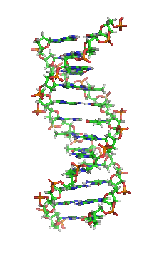
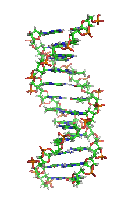

Deoxyribonucleic acid
 Richard Wheeler (Zephyris) at en.wikipedia
Global Regulatory Mechanisms?
growth homeostasiscell differentiationsporulation...
Direct Impact of Cell Physiologyon Chromosome Structure & Transcription?
Rainer Machne
 Richard Wheeler (Zephyris) at en.wikipedia
Global Regulatory Mechanisms?
Direct Impact of Cell Physiologyon Chromosome Structure & Transcription?


ATP-dependent Nucleosome Remodeling. A Global Growth Regulatory Feedback?
| raw time-series: | temporal mean ratio: |
|---|---|
 |
 |
Nocetti & Whitehouse, GenesDevel 2016: Nucleosome repositioning underlies dynamic gene expression.
 I
II
I
II
 III
III
 IV
IV
 V
VI
VII
V
VI
VII
 VIII
VIII
 IX
X
IX
X
 XI
XII
XIII
XI
XII
XIII
 XIV
XV
XVI
XIV
XV
XVI
 mitochondrial
mitochondrial


2
https://gitlab.com/raim/genomeBrowser

KARLfastq.gz) files to Berni in Leipzig (Stephan Bernhart) →
segemehl 
 and
retrieve mapping of reads to genome as read counts!
and
retrieve mapping of reads to genome as read counts!KARL:KARL

primary segments)DFT (scale components) &DFT componentsKARL: to find coherently expressed regionsKARL
\[ \begin{equation*} \begin{aligned} s(i,j,\mathcal{C})=& -M + \sum_{k=i}^j \tilde\Delta(\mathcal{C}_k,\mathcal{C})\\ S_{i,\mathcal{C}} =& \max_{j \le i} \max_{\mathcal{D}\ne\mathcal{C}} S_{j-1,\mathcal{D}} + s(j,i,\mathcal{C}) \end{aligned} \end{equation*}\]
KARL
... and backtrace over score matrix \(S_{i,\mathcal{C}}\):
→ find optimal segment breakpoints

PCA of several segmentation characteristica, grouped by:
Karl parameters, here, exponent on Pearson correlation in
similarity measure (right)
Good recovery of known protein-coding genes.
Random recovery of reported non-coding transcripts!

Much better recovery of
ribosomes, amino acid synthesis, etc: important growth genes!


fail ;( tiny osci segment divergent to SRG1 not recognized